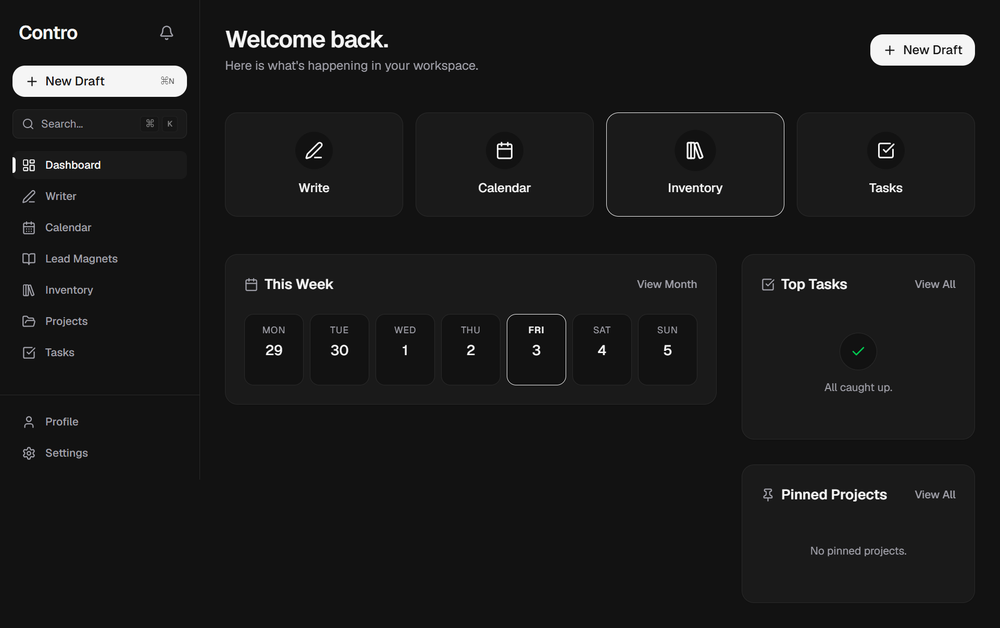
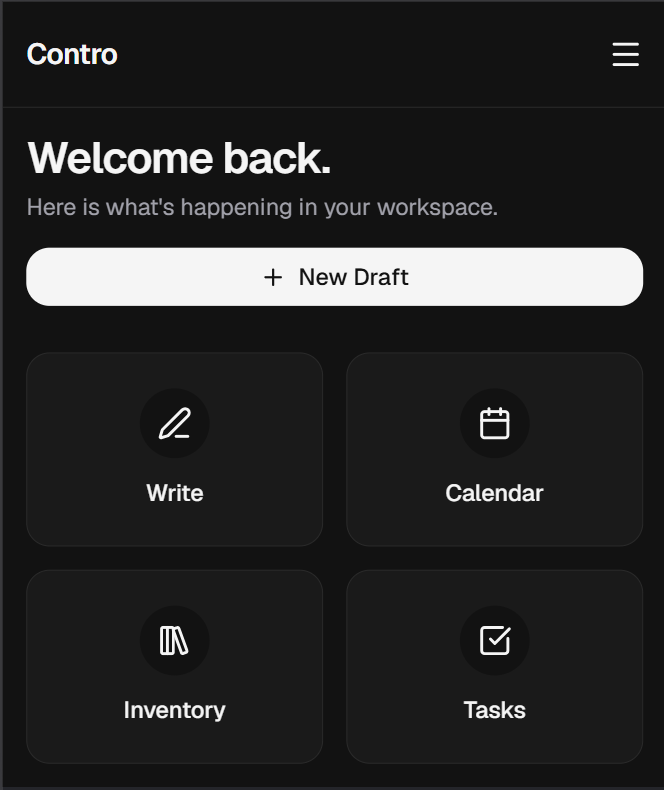

The Content
Operating System.
Write once. Deploy endlessly. A calm, focused environment designed to help you capture, organize, retrieve, and reuse content.

Stop rewriting the same ideas.
Contro removes the friction between having an idea and retrieving it when it matters most.
Capture
A distraction-free writing environment. Offline-first so you never lose a draft. Write at the speed of thought.
Organize
Projects are clean, single-level containers. No infinite subfolders. No losing context. Just focused spaces.
Retrieve
Instant search across all your drafts, projects, and assets. Find that hook from 6 months ago in 2 seconds.
Reuse
The Inventory acts as a central repository for the assets you use repeatedly. Write once, deploy endlessly.
Designed for
the creative mind.
Access your content library from anywhere. The mobile experience is crafted to be as powerful as the desktop, ensuring your workflow never stops.
- Offline-first architecture
- Sub-second interactions
- Minimalist, calm interface
